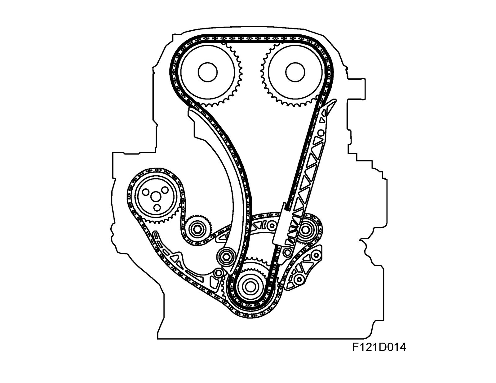
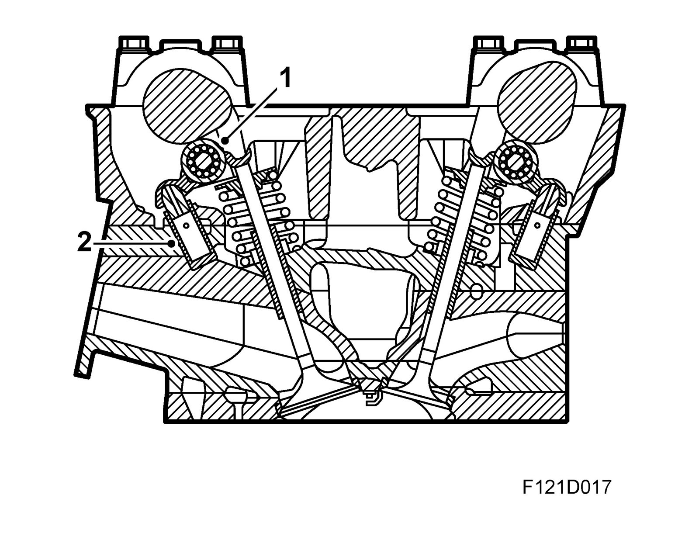
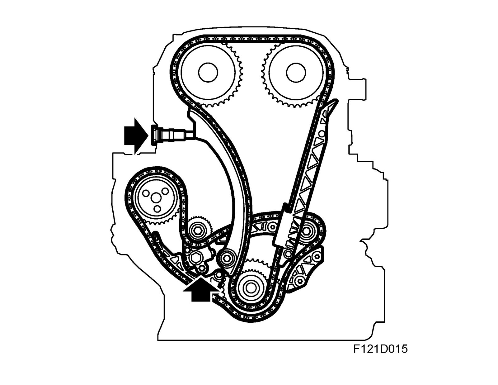

Timing Components: Description and Operation
Camshaft drive
Camshafts
Then engine has twin overhead camshafts driven by a single chain with self-adjusting chain tensioner. To further reduce chain noise, the edges of the camshaft sprocket on the crankshaft are coated in rubber.

1. Rocker arm
2. Hydraulic valve clearance balancer
The cam lobes act on the rocker arms via roller bearings mounted on the rocker arms. This eliminates the need for valve adjustment as it is achieved continuously via a hydraulic balancer under the valve rocker. The valve clearance balancer works in an oil bath and is supplied with oil via an oil way in the cylinder head. The main advantages are very low friction, quiet running and high reliability.
The inlet valves are made of steel with chromium plated stems. The exhaust valves are made of special steel and are filled with sodium, which helps to dissipate 50% of the heat through the valve stem by transporting the heat away from the valve head to the stem.
Note that before scrapping a valve, a cut must be made in the stem where the cavity for the sodium is to avoid risk of explosion.
The inlet camshaft drives the power steering pump and the exhaust camshaft the vacuum pump via direct drive.
Chain tensioner

The cam chain tensioner is mounted in the cylinder head and is easily accessible for service. The tension is applied by a spring-loaded piston that keeps the slack side of the chain taut via a guide rail that is supported at the bottom. A close-stepped ratchet prevents the piston, and thereby the guide rail, from returning. The balancer shaft chain tensioner is mounted on the cylinder block inside the chain circuit cover.
The chain tensioner has tightly spaced adjustment intervals, which allows good compensation for chain wear and consequently quieter running.